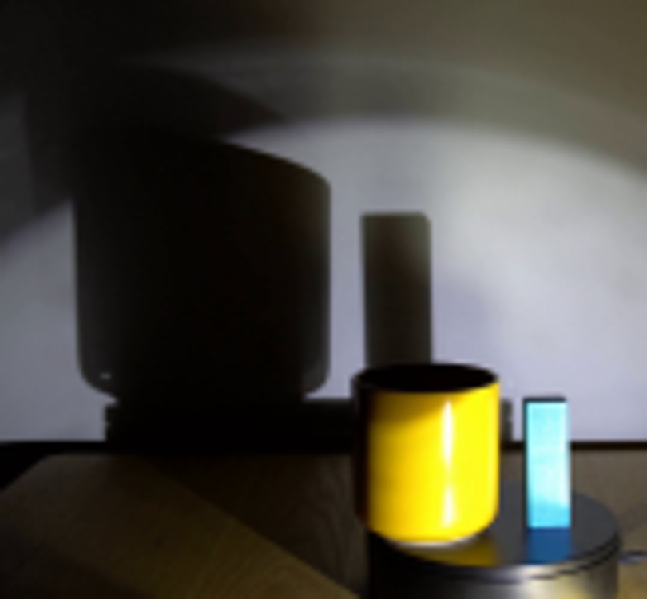
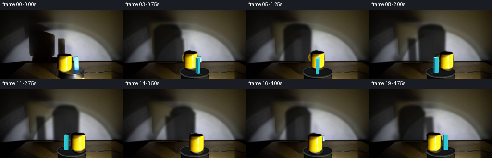
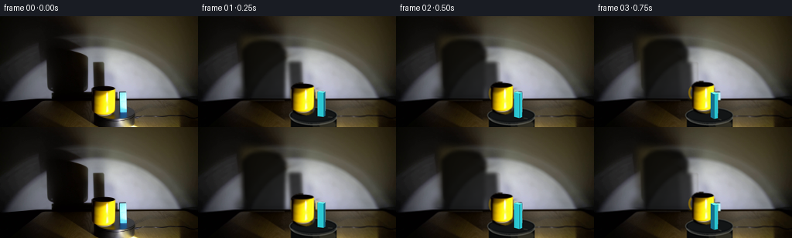
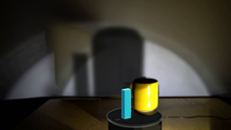
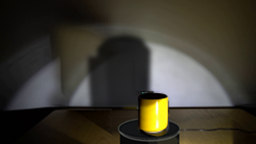

CODING AGENTS AS PIXEL WORLD MODELS
traex/GPT-5.6-Sol · 0080
点击播放 · 原生 RGB 像素
逐轮保存的候选
回放视频、检查图与代码变化。
每份候选均可单独播放。实际图片检查记录在下方工具轨迹中。
候选 01播放与检查图
点击播放 · 原生 RGB 像素

展开代码变化
--- 上一保存版本
+++ 本次保存版本
@@ -0,0 +1,209 @@
+from pathlib import Path
+import math
+import numpy as np
+import cv2
+from PIL import Image, ImageDraw, ImageFilter
+import artifact_io
+
+CASE = Path(__file__).resolve().parent
+W,H = 256,144
+SS=4
+
+def soft_polygon(size, polygons, blur=2.0):
+ im=Image.new('L', size, 0); d=ImageDraw.Draw(im)
+ for p in polygons: d.polygon(p, fill=255)
+ if blur: im=im.filter(ImageFilter.GaussianBlur(blur))
+ return np.asarray(im,dtype=np.float32)/255
+
+def clean_background(src):
+ """Recover the illuminated wall under the initial cast shadow by radial symmetry."""
+ a=src.astype(np.float32)
+ donor=np.empty_like(a)
+ for x in range(W):
+ xx=int(np.clip(300-x,0,W-1))
+ donor[:,x]=a[:,xx]
+ # Shadow cast by the mug, block, and their common contact shadow.
+ polys=[[(55,25),(91,29),(111,41),(116,51),(114,92),(107,100),(110,108),(57,108),(64,98),(59,88)],
+ [(115,53),(137,53),(140,108),(113,108)],
+ [(52,94),(150,94),(150,109),(50,109)]]
+ m=soft_polygon((W,H),polys,blur=5.0)
+ m[110:]=0
+ # Preserve natural high-frequency sensor texture while replacing dark illumination.
+ clean=a*(1-m[...,None])+donor*m[...,None]
+ # Remove foreground from its old location. Wall portion comes from the clean wall.
+ # The table under the apparatus is reconstructed from adjacent real wood pixels.
+ table=clean.copy()
+ for y in range(109,H):
+ # interpolate wood from either side, retaining row-wise illumination
+ left=src[y,105:116].astype(np.float32).mean(axis=0)
+ right=src[y,180:191].astype(np.float32).mean(axis=0)
+ for x in range(112,184):
+ q=(x-112)/72
+ table[y,x]=left*(1-q)+right*q
+ # soft grain borrowed from a nearby strip
+ rng=np.random.default_rng(80)
+ grain=rng.normal(0,1.25,(H,W,1)).astype(np.float32)
+ table[109:,112:184]+=grain[109:,112:184]
+ return np.uint8(np.clip(table,0,255))
+
+def mug_sprite(src):
+ # Real pixels and real specular highlight from frame zero, with hand-fitted soft silhouette.
+ box=(115,86,154,135); crop=src[box[1]:box[3],box[0]:box[2]].copy()
+ mh,mw=crop.shape[:2]
+ mask=Image.new('L',(mw,mh),0); d=ImageDraw.Draw(mask)
+ d.ellipse((4,3,35,17),fill=255)
+ d.rectangle((5,10,34,37),fill=255)
+ d.ellipse((5,29,34,46),fill=255)
+ # narrow dark rim and subtle foot belong to the vessel
+ mask=mask.filter(ImageFilter.GaussianBlur(.65))
+ return crop, np.asarray(mask,dtype=np.float32)/255, (19.5,43.5)
+
+def paste_scaled(dst, rgb, alpha, anchor_xy, scale=1.0):
+ nh=max(1,round(rgb.shape[0]*scale)); nw=max(1,round(rgb.shape[1]*scale))
+ rr=cv2.resize(rgb,(nw,nh),interpolation=cv2.INTER_CUBIC)
+ aa=cv2.resize(alpha,(nw,nh),interpolation=cv2.INTER_LINEAR)
+ ax=19.5*scale; ay=43.5*scale
+ x0=round(anchor_xy[0]-ax); y0=round(anchor_xy[1]-ay)
+ x1=x0+nw; y1=y0+nh
+ xa=max(0,x0); ya=max(0,y0); xb=min(W,x1); yb=min(H,y1)
+ if xb<=xa or yb<=ya:return
+ sx0=xa-x0; sy0=ya-y0; sx1=sx0+(xb-xa); sy1=sy0+(yb-ya)
+ al=aa[sy0:sy1,sx0:sx1,None]
+ dst[ya:yb,xa:xb]=dst[ya:yb,xa:xb]*(1-al)+rr[sy0:sy1,sx0:sx1]*al
+
+def draw_shadows(frame, objects):
+ layer=Image.new('L',(W*SS,H*SS),0); d=ImageDraw.Draw(layer)
+ Lx=196.0
+ for kind,x,y in objects:
+ # The nearer an object is to the lamp, the larger its wall projection.
+ if kind=='mug':
+ s=1.78 + (128-y)*0.018
+ cx=Lx+s*(x-Lx); wid=30*s; ht=41*s
+ bottom=109; top=bottom-ht
+ # A softly rounded cylindrical silhouette, slightly sheared by the oblique beam.
+ p=[((cx-wid*.50)*SS,bottom*SS),((cx-wid*.54)*SS,(top+9)*SS),
+ ((cx-wid*.39)*SS,top*SS),((cx+wid*.38)*SS,(top+2)*SS),
+ ((cx+wid*.52)*SS,(top+10)*SS),((cx+wid*.49)*SS,bottom*SS)]
+ d.polygon(p,fill=225)
+ d.ellipse(((cx-wid*.40)*SS,(top-4)*SS,(cx+wid*.40)*SS,(top+9)*SS),fill=225)
+ else:
+ s=1.88 + (128-y)*0.015
+ cx=Lx+s*(x-Lx); wid=9*s; ht=27*s
+ shear=-3.0
+ d.polygon([((cx-wid/2)*SS,109*SS),((cx-wid/2+shear)*SS,(109-ht)*SS),
+ ((cx+wid/2+shear)*SS,(109-ht)*SS),((cx+wid/2)*SS,109*SS)],fill=205)
+ layer=layer.filter(ImageFilter.GaussianBlur(2.25*SS))
+ a=np.asarray(layer.resize((W,H),Image.Resampling.LANCZOS),dtype=np.float32)/255
+ a[:12]=0; a[110:]=0
+ # Cast shadow is nearly black but allows the spotlight and wall grain through.
+ tint=np.array([3.,3.,2.],np.float32)
+ frame[:]=frame*(1-a[...,None]*.92)+tint*(a[...,None]*.92)
+
+def draw_platform(frame, phase):
+ # Antialiased, fixed turntable body. Moving glints/marks make platter rotation legible.
+ im=Image.fromarray(np.uint8(np.clip(frame,0,255))).resize((W*SS,H*SS),Image.Resampling.BICUBIC)
+ d=ImageDraw.Draw(im,'RGBA')
+ sc=SS
+ # lower housing and curved front wall
+ d.rectangle((120*sc,128*sc,179*sc,144*sc),fill=(7,8,8,255))
+ d.ellipse((120*sc,133*sc,179*sc,151*sc),fill=(8,9,9,255))
+ # lamp reflection on front right
+ d.ellipse((148*sc,132*sc,179*sc,150*sc),fill=(52,51,40,105))
+ d.ellipse((157*sc,136*sc,178*sc,147*sc),fill=(106,97,64,65))
+ # upper platter
+ d.ellipse((118*sc,118*sc,180*sc,139*sc),fill=(14,16,17,255),outline=(80,82,78,230),width=1*sc)
+ d.ellipse((121*sc,121*sc,177*sc,136*sc),fill=(19,21,22,255))
+ # subtle rotating highlight dash and spindle indication
+ ang=phase
+ cx,cy=149,129
+ x=cx+26*math.cos(ang); y=cy+7*math.sin(ang)
+ x2=cx+20*math.cos(ang); y2=cy+5.5*math.sin(ang)
+ d.line((x2*sc,y2*sc,x*sc,y*sc),fill=(128,125,104,105),width=sc)
+ # silver front rim
+ d.arc((119*sc,119*sc,180*sc,141*sc),8,172,fill=(113,114,108,230),width=sc)
+ d.arc((121*sc,121*sc,178*sc,139*sc),9,171,fill=(44,46,46,220),width=sc)
+ out=np.asarray(im.resize((W,H),Image.Resampling.LANCZOS),dtype=np.float32)
+ frame[:]=out
+
+def draw_handle(frame, x,y, beta, scale):
+ # Initially edge-on and hidden; it naturally appears as the mug turns.
+ side=math.sin(beta)
+ vis=abs(side)
+ if vis<.16:return
+ im=Image.fromarray(np.uint8(np.clip(frame,0,255))).resize((W*SS,H*SS),Image.Resampling.BICUBIC)
+ d=ImageDraw.Draw(im,'RGBA'); direction=1 if side>0 else -1
+ sx=(x + direction*13.5*scale)*SS; yy=(y-25*scale)*SS
+ rx=(5.5*vis+1.0)*scale*SS; ry=9*scale*SS
+ box=(sx-rx,yy-ry,sx+rx,yy+ry)
+ d.arc(box,70 if direction>0 else 110,290 if direction>0 else 250,fill=(165,126,0,int(210*vis)),width=max(2,int(3*scale*SS)))
+ frame[:]=np.asarray(im.resize((W,H),Image.Resampling.LANCZOS),dtype=np.float32)
+
+def draw_block(frame,x,y,beta,scale=1.0):
+ im=Image.fromarray(np.uint8(np.clip(frame,0,255))).resize((W*SS,H*SS),Image.Resampling.BICUBIC)
+ d=ImageDraw.Draw(im,'RGBA'); s=SS
+ w=8.5*scale; dep=5.5*scale; h=31*scale
+ # turn two footprint axes in the platter plane
+ ux=np.array([math.cos(beta)*w, math.sin(beta)*w*.31])
+ vz=np.array([-math.sin(beta)*dep, math.cos(beta)*dep*.31])
+ c=np.array([x,y])-vz*.15
+ pts=[]
+ for a,b in [(-.5,-.5),(.5,-.5),(.5,.5),(-.5,.5)]: pts.append(c+a*ux+b*vz)
+ top=[p+np.array([0,-h]) for p in pts]
+ # Visible side faces chosen by their screen-facing footprint edges; far faces first.
+ faces=[]
+ for i in range(4):
+ j=(i+1)%4
+ depth=(pts[i][1]+pts[j][1])/2
+ faces.append((depth,i,j))
+ for _,i,j in sorted(faces):
+ # only the two front-most sides receive opaque paint
+ if (pts[i][1]+pts[j][1])/2 < c[1]-0.05: continue
+ normal_brightness=0.78 if abs(pts[i][0]-pts[j][0])<abs(pts[i][1]-pts[j][1])*2 else 1.0
+ col=(43,198,210,255) if normal_brightness>0.9 else (22,112,142,255)
+ poly=[tuple(pts[i]*s),tuple(pts[j]*s),tuple(top[j]*s),tuple(top[i]*s)]
+ d.polygon(poly,fill=col)
+ # luminous front glaze, top cap and dark physical edges
+ d.polygon([tuple(p*s) for p in top],fill=(119,243,238,255))
+ for i in range(4):
+ j=(i+1)%4
+ if (pts[i][1]+pts[j][1])/2 >= c[1]-0.05:
+ d.line((*tuple(top[i]*s),*tuple(pts[i]*s)),fill=(14,57,69,210),width=max(1,s//2))
+ # a narrow white-blue specular stroke on the lamp-facing side
+ best=max(range(4),key=lambda i: pts[i][0])
+ q0=top[best]*.85+top[(best+1)%4]*.15; q1=pts[best]*.8+top[best]*.2
+ d.line((*tuple(q0*s),*tuple(q1*s)),fill=(185,255,249,130),width=max(1,s//2))
+ frame[:]=np.asarray(im.resize((W,H),Image.Resampling.LANCZOS),dtype=np.float32)
+
+def generate():
+ src=np.asarray(Image.open(CASE/'first_frame.png').convert('RGB'))
+ bg=clean_background(src)
+ mrgb,ma,_=mug_sprite(src)
+ frames=[]
+ for i in range(20):
+ if i==0:
+ frames.append(src.copy()); continue
+ phase=2*math.pi*i/20.0 # one clockwise revolution in five seconds
+ # positions on the perspectively compressed circular platter
+ mug_ang=math.pi+phase
+ block_ang=0.08+phase
+ mx=149+14.5*math.cos(mug_ang); my=128+5.4*math.sin(mug_ang)
+ bx=149+11.2*math.cos(block_ang); by=128+4.5*math.sin(block_ang)
+ objects=[('mug',mx,my),('block',bx,by)]
+ fr=bg.astype(np.float32).copy()
+ draw_shadows(fr,objects)
+ draw_platform(fr,phase)
+ # Render back-to-front so orbital depth and mutual occlusion are physically coherent.
+ render=[('mug',mx,my,mug_ang),('block',bx,by,block_ang)]
+ for kind,x,y,beta in sorted(render,key=lambda z:z[2]):
+ scale=1+(y-128)*.007
+ if kind=='mug':
+ draw_handle(fr,x,y,beta,scale)
+ paste_scaled(fr,mrgb,ma,(x,y),scale)
+ else:
+ draw_block(fr,x,y,beta,scale)
+ frames.append(np.uint8(np.clip(fr,0,255)))
+ arr=np.stack(frames).astype(np.uint8)
+ assert np.array_equal(arr[0],src)
+ artifact_io.save(arr,CASE)
+
+if __name__=='__main__': generate()
可观测工具轨迹
实际执行的命令与返回图片。
命令 1exit 0
/bin/bash -lc "cat prompt.txt && printf '\\n---RULES---\\n' && cat GENERATION_RULES.md"
命令 2exit 0
/bin/bash -lc "find . -maxdepth 2 -type f -printf '%p %s bytes\\n' | sort"
命令 3exit 0
/bin/bash -lc "python - <<'PY'
from PIL import Image
im=Image.open('first_frame.png')
print(im.size, im.mode)
PY
ffmpeg -version | head -4"命令 4exit 0
/bin/bash -lc 'cat artifact_io.py'
命令 5exit 0
/bin/bash -lc "python - <<'PY' mods=['cv2','scipy','skimage','imageio'] for m in mods: try: x=__import__(m); print(m,'yes',getattr(x,'__version__','')) except Exception as e: print(m,'no',e) PY"
命令 6exit 0
/bin/bash -lc "python - <<'PY'
from PIL import Image
im=Image.open('first_frame.png')
im.crop((45,15,180,140)).resize((810,750)).save('.tmp/crop.png')
PY"命令 7exit 0
/bin/bash -lc "python - <<'PY'
from PIL import Image
import numpy as np
im=np.array(Image.open('first_frame.png'))
for y in [20,30,40,50,60,70,80,90,100,108]:
print('y',y, ['%3d'%im[y,x].mean() for x in range(0,256,16)])
PY"命令 8exit 0
/bin/bash -lc "cat > generate.py <<'PY'
from pathlib import Path
import math
import numpy as np
import cv2
from PIL import Image, ImageDraw, ImageFilter
import artifact_io
CASE = Path(__file__).resolve().parent
W,H = 256,144
SS=4
def soft_polygon(size, polygons, blur=2.0):
im=Image.new('L', size, 0); d=ImageDraw.Draw(im)
for p in polygons: d.polygon(p, fill=255)
if blur: im=im.filter(ImageFilter.GaussianBlur(blur))
return np.asarray(im,dtype=np.float32)/255
def clean_background(src):
\"\"\"Recover the illuminated wall under the initial cast shadow by radial symmetry.\"\"\"
a=src.astype(np.float32)
donor=np.empty_like(a)
for x in range(W):
xx=int(np.clip(300-x,0,W-1))
donor[:,x]=a[:,xx]
# Shadow cast by the mug, block, and their common contact shadow.
polys=[[(55,25),(91,29),(111,41),(116,51),(114,92),(107,100),(110,108),(57,108),(64,98),(59,88)],
[(115,53),(137,53),(140,108),(113,108)],
[(52,94),(150,94),(150,109),(50,109)]]
m=soft_polygon((W,H),polys,blur=5.0)
m[110:]=0
# Preserve natural high-frequency sensor texture while replacing dark illumination.
clean=a*(1-m[...,None])+donor*m[...,None]
# Remove foreground from its old location. Wall portion comes from the clean wall.
# The table under the apparatus is reconstructed from adjacent real wood pixels.
table=clean.copy()
for y in range(109,H):
# interpolate wood from either side, retaining row-wise illumination
left=src[y,105:116].astype(np.float32).mean(axis=0)
right=src[y,180:191].astype(np.float32).mean(axis=0)
for x in range(112,184):
q=(x-112)/72
table[y,x]=left*(1-q)+right*q
# soft grain borrowed from a nearby strip
rng=np.random.default_rng(80)
grain=rng.normal(0,1.25,(H,W,1)).astype(np.float32)
table[109:,112:184]+=grain[109:,112:184]
return np.uint8(np.clip(table,0,255))
def mug_sprite(src):
# Real pixels and real specular highlight from frame zero, with hand-fitted soft silhouette.
box=(115,86,154,135); crop=src[box[1]:box[3],box[0]:box[2]].copy()
mh,mw=crop.shape[:2]
mask=Image.new('L',(mw,mh),0); d=ImageDraw.Draw(mask)
d.ellipse((4,3,35,17),fill=255)
d.rectangle((5,10,34,37),fill=255)
d.ellipse((5,29,34,46),fill=255)
# narrow dark rim and subtle foot belong to the vessel
mask=mask.filter(ImageFilter.GaussianBlur(.65))
return crop, np.asarray(mask,dtype=np.float32)/255, (19.5,43.5)
def paste_scaled(dst, rgb, alpha, anchor_xy, scale=1.0):
nh=max(1,round(rgb.shape[0]*scale)); nw=max(1,round(rgb.shape[1]*scale))
rr=cv2.resize(rgb,(nw,nh),interpolation=cv2.INTER_CUBIC)
aa=cv2.resize(alpha,(nw,nh),interpolation=cv2.INTER_LINEAR)
ax=19.5*scale; ay=43.5*scale
x0=round(anchor_xy[0]-ax); y0=round(anchor_xy[1]-ay)
x1=x0+nw; y1=y0+nh
xa=max(0,x0); ya=max(0,y0); xb=min(W,x1); yb=min(H,y1)
if xb<=xa or yb<=ya:return
sx0=xa-x0; sy0=ya-y0; sx1=sx0+(xb-xa); sy1=sy0+(yb-ya)
al=aa[sy0:sy1,sx0:sx1,None]
dst[ya:yb,xa:xb]=dst[ya:yb,xa:xb]*(1-al)+rr[sy0:sy1,sx0:sx1]*al
def draw_shadows(frame, objects):
layer=Image.new('L',(W*SS,H*SS),0); d=ImageDraw.Draw(layer)
Lx=196.0
for kind,x,y in objects:
# The nearer an object is to the lamp, the larger its wall projection.
if kind=='mug':
s=1.78 + (128-y)*0.018
cx=Lx+s*(x-Lx); wid=30*s; ht=41*s
bottom=109; top=bottom-ht
# A softly rounded cylindrical silhouette, slightly sheared by the oblique beam.
p=[((cx-wid*.50)*SS,bottom*SS),((cx-wid*.54)*SS,(top+9)*SS),
((cx-wid*.39)*SS,top*SS),((cx+wid*.38)*SS,(top+2)*SS),
((cx+wid*.52)*SS,(top+10)*SS),((cx+wid*.49)*SS,bottom*SS)]
d.polygon(p,fill=225)
d.ellipse(((cx-wid*.40)*SS,(top-4)*SS,(cx+wid*.40)*SS,(top+9)*SS),fill=225)
else:
s=1.88 + (128-y)*0.015
cx=Lx+s*(x-Lx); wid=9*s; ht=27*s
shear=-3.0
d.polygon([((cx-wid/2)*SS,109*SS),((cx-wid/2+shear)*SS,(109-ht)*SS),
((cx+wid/2+shear)*SS,(109-ht)*SS),((cx+wid/2)*SS,109*SS)],fill=205)
layer=layer.filter(ImageFilter.GaussianBlur(2.25*SS))
a=np.asarray(layer.resize((W,H),Image.Resampling.LANCZOS),dtype=np.float32)/255
a[:12]=0; a[110:]=0
# Cast shadow is nearly black but allows the spotlight and wall grain through.
tint=np.array([3.,3.,2.],np.float32)
frame[:]=frame*(1-a[...,None]*.92)+tint*(a[...,None]*.92)
def draw_platform(frame, phase):
# Antialiased, fixed turntable body. Moving glints/marks make platter rotation legible.
im=Image.fromarray(np.uint8(np.clip(frame,0,255))).resize((W*SS,H*SS),Image.Resampling.BICUBIC)
d=ImageDraw.Draw(im,'RGBA')
sc=SS
# lower housing and curved front wall
d.rectangle((120*sc,128*sc,179*sc,144*sc),fill=(7,8,8,255))
d.ellipse((120*sc,133*sc,179*sc,151*sc),fill=(8,9,9,255))
# lamp reflection on front right
d.ellipse((148*sc,132*sc,179*sc,150*sc),fill=(52,51,40,105))
d.ellipse((157*sc,136*sc,178*sc,147*sc),fill=(106,97,64,65))
# upper platter
d.ellipse((118*sc,118*sc,180*sc,139*sc),fill=(14,16,17,255),outline=(80,82,78,230),width=1*sc)
d.ellipse((121*sc,121*sc,177*sc,136*sc),fill=(19,21,22,255))
# subtle rotating highlight dash and spindle indication
ang=phase
cx,cy=149,129
x=cx+26*math.cos(ang); y=cy+7*math.sin(ang)
x2=cx+20*math.cos(ang); y2=cy+5.5*math.sin(ang)
d.line((x2*sc,y2*sc,x*sc,y*sc),fill=(128,125,104,105),width=sc)
# silver front rim
d.arc((119*sc,119*sc,180*sc,141*sc),8,172,fill=(113,114,108,230),width=sc)
d.arc((121*sc,121*sc,178*sc,139*sc),9,171,fill=(44,46,46,220),width=sc)
out=np.asarray(im.resize((W,H),Image.Resampling.LANCZOS),dtype=np.float32)
frame[:]=out
def draw_handle(frame, x,y, beta, scale):
# Initially edge-on and hidden; it naturally appears as the mug turns.
side=math.sin(beta)
vis=abs(side)
if vis<.16:return
im=Image.fromarray(np.uint8(np.clip(frame,0,255))).resize((W*SS,H*SS),Image.Resampling.BICUBIC)
d=ImageDraw.Draw(im,'RGBA'); direction=1 if side>0 else -1
sx=(x + direction*13.5*scale)*SS; yy=(y-25*scale)*SS
rx=(5.5*vis+1.0)*scale*SS; ry=9*scale*SS
box=(sx-rx,yy-ry,sx+rx,yy+ry)
d.arc(box,70 if direction>0 else 110,290 if direction>0 else 250,fill=(165,126,0,int(210*vis)),width=max(2,int(3*scale*SS)))
frame[:]=np.asarray(im.resize((W,H),Image.Resampling.LANCZOS),dtype=np.float32)
def draw_block(frame,x,y,beta,scale=1.0):
im=Image.fromarray(np.uint8(np.clip(frame,0,255))).resize((W*SS,H*SS),Image.Resampling.BICUBIC)
d=ImageDraw.Draw(im,'RGBA'); s=SS
w=8.5*scale; dep=5.5*scale; h=31*scale
# turn two footprint axes in the platter plane
ux=np.array([math.cos(beta)*w, math.sin(beta)*w*.31])
vz=np.array([-math.sin(beta)*dep, math.cos(beta)*dep*.31])
c=np.array([x,y])-vz*.15
pts=[]
for a,b in [(-.5,-.5),(.5,-.5),(.5,.5),(-.5,.5)]: pts.append(c+a*ux+b*vz)
top=[p+np.array([0,-h]) for p in pts]
# Visible side faces chosen by their screen-facing footprint edges; far faces first.
faces=[]
for i in range(4):
j=(i+1)%4
depth=(pts[i][1]+pts[j][1])/2
faces.append((depth,i,j))
for _,i,j in sorted(faces):
# only the two front-most sides receive opaque paint
if (pts[i][1]+pts[j][1])/2 < c[1]-0.05: continue
normal_brightness=0.78 if abs(pts[i][0]-pts[j][0])<abs(pts[i][1]-pts[j][1])*2 else 1.0
col=(43,198,210,255) if normal_brightness>0.9 else (22,112,142,255)
poly=[tuple(pts[i]*s),tuple(pts[j]*s),tuple(top[j]*s),tuple(top[i]*s)]
d.polygon(poly,fill=col)
# luminous front glaze, top cap and dark physical edges
d.polygon([tuple(p*s) for p in top],fill=(119,243,238,255))
for i in range(4):
j=(i+1)%4
if (pts[i][1]+pts[j][1])/2 >= c[1]-0.05:
d.line((*tuple(top[i]*s),*tuple(pts[i]*s)),fill=(14,57,69,210),width=max(1,s//2))
# a narrow white-blue specular stroke on the lamp-facing side
best=max(range(4),key=lambda i: pts[i][0])
q0=top[best]*.85+top[(best+1)%4]*.15; q1=pts[best]*.8+top[best]*.2
d.line((*tuple(q0*s),*tuple(q1*s)),fill=(185,255,249,130),width=max(1,s//2))
frame[:]=np.asarray(im.resize((W,H),Image.Resampling.LANCZOS),dtype=np.float32)
def generate():
src=np.asarray(Image.open(CASE/'first_frame.png').convert('RGB'))
bg=clean_background(src)
mrgb,ma,_=mug_sprite(src)
frames=[]
for i in range(20):
if i==0:
frames.append(src.copy()); continue
phase=2*math.pi*i/20.0 # one clockwise revolution in five seconds
# positions on the perspectively compressed circular platter
mug_ang=math.pi+phase
block_ang=0.08+phase
mx=149+14.5*math.cos(mug_ang); my=128+5.4*math.sin(mug_ang)
bx=149+11.2*math.cos(block_ang); by=128+4.5*math.sin(block_ang)
objects=[('mug',mx,my),('block',bx,by)]
fr=bg.astype(np.float32).copy()
draw_shadows(fr,objects)
draw_platform(fr,phase)
# Render back-to-front so orbital depth and mutual occlusion are physically coherent.
render=[('mug',mx,my,mug_ang),('block',bx,by,block_ang)]
for kind,x,y,beta in sorted(render,key=lambda z:z[2]):
scale=1+(y-128)*.007
if kind=='mug':
draw_handle(fr,x,y,beta,scale)
paste_scaled(fr,mrgb,ma,(x,y),scale)
else:
draw_block(fr,x,y,beta,scale)
frames.append(np.uint8(np.clip(fr,0,255)))
arr=np.stack(frames).astype(np.uint8)
assert np.array_equal(arr[0],src)
artifact_io.save(arr,CASE)
if __name__=='__main__': generate()
PY
python generate.py"命令 9exit 0
/bin/bash -lc "python - <<'PY'
import numpy as np
from PIL import Image
z=np.load('pixels.npz')['pixels']
a=np.stack([((z[:,:,i,None] >> np.array([16,8,0])) & 255).astype(np.uint8) for i in range(z.shape[2])])
print(a.shape,a.dtype,'first identical',np.array_equal(a[0],np.asarray(Image.open('first_frame.png'))))
print('diff pixels successive:',[int(np.any(a[i]"'!=a[i-1],2).sum()) for i in range(1,20)])
PY
ls -lh pixels.npz index.html inspection.png frames/00.png frames/19.png'视觉工具实际返回图片 1

视觉工具实际返回图片 2

视觉工具实际返回图片 3

视觉工具实际返回图片 4

视觉工具实际返回图片 5

视觉工具实际返回图片 6

保存候选 1 份；完成命令 9 次；可验证图片返回 6 张。原始 API 响应与完整日志保留在本地。